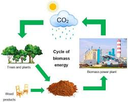

Biomass energy is a renewable source of energy derived from organic materials such as plant and animal waste. This page provides a visualization of biomass production data over several months, highlighting the trends and patterns in biomass generation.
